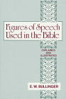

|
See the book: Figures of Speech used in the Bible A "Figure of speech" relates to the form in which the words are used. It consists in the fact that a word or words are used out of their ordinary sense, or place, or manner, for the purpose of attracting our attention to what is thus said. A Figure of speech is a deigned and legitimate departure from the laws of language, in order to emphasize what is said. Hence in such Figures we have the Holy Spirit's own marking, so to speak, of His own words. This peculiar form or unusual manner may not be true, or so true, to
the literal meaning of the words; but it is more true to their real sense, and truer to truth. Figures are never used but for the sake of emphasis. They can
never, therefore, be ignored. Ignorance of Figures of speech has
led to the grossest errors, which have been caused either from taking literally
what is figurative, or from taking figuratively what is literal.
In Gen. 3:14, 15 we have some of the earliest examples. By interpreting these figures literally as meaning "belly", "dust", "heel", "head", we lose the volumes of precious and mysterious truth which they convey and intensify. It is the truth which is literal, while the words employed are figurative. (See under Ap. 19.) In the marginal notes will be found the names of most of these figures; and we append a list with their pronunciation and English definitions (giving one or more references as examples):-- Ac-cis'-mus ; or, Apparent Refusal (Matthew 15:22-26). So named because it is an apparent or assumed refusal. Ac-ro'-stichion; or, Acrostic (Psalm 119). Repetition of the same or successive letters at the beginnings of words or clauses. Æ-nig'-ma; or, Dark Saying (Genesis 49:10. Judges 14:14). A truth expressed in obscure language. Æ'-ti-o-log'-ia; or Cause Shown (Romans 1:16). Rendering a reason for what is said or done. Affirmatio; or, Affirmation (Philppians 1:18). Emphasising words to affirm what no one has disputed. Ag'-an-ac-te'-sis; or Indignation (Genesis 3:13. Acts 13:10). An expression of feeling by way of indignation. Al'-le-go-ry; or, Continued Comparison by Reprensentation (Metaphor) (Genesis 49:9. Galatians 4:22,24), and Implication (Hypocatastasis) (Matthew 7:3-5). Teaching a truth about one thing by substituting another for it which is unlike it. Am-oe-bae'-on; or, Refrain (Psalm 136). The repetition of the same phrase at the end successive paragraphs. Am'-phi-di-or-tho'-sis; or, Double Correction (1Corinthians 11:22). A correction setting right both hearer and speaker. Am'-pli-a'-tio; or, Adjournment (Genesis 2:23. 1Samuel 30:5). A retaining of an old name after the reason for it has passed away. An-ab'-a-sis; or, Gradual Ascent (Psalm 18:37,38). An increase of emphasis or sense in successive sentences. An-acho'-re-sis; or, Regression (Ephesians 3:14). A return to the original subject after a digression. An'-a-coe-no-sis; or, Common Cause (1Corithians 4:21). An appeal to others as having interests in common. An'-a-co-lu'-thon; or, Non-Sequence (Genesis 35:3. Mark 11:32). A breaking off the sequence of thought. An'-a-di-plo'-sis; or, Like Sentence Endings and Beginnings (Genesis 1:1,2. Psalm 121:1,2). The word or words concluding one sentence are repeated at the beginning of another. An'-a-mne'-sis; or, Recalling (Romans 9:3). An expression of feeling by way of recalling to mind. An-a'-pho-ra; or, Like Sentence Beginnings (Deuteronomy 28:3-6). The repetition of the same word at the beginning of successive sentences. An-a'-stro-phe; or, Arraignment (Acts 7:48). The position of one word changed, so as to be out of its proper or usaul place in a sentence. An'-e-sis; or Abating (2Kings 5:1). The addition of a concluding sentence which diminishes the effect of what has been said. Ant-eis'-a-go-ge; or, Counter Question (Matthew 21:23-25). The answering of one quetion by asking another. An-throp'-o-path-ei'-a; or, Condescension (Genesis 1:2; 8:21. Psalm 74:11. Jeremiah 2:13< face="Verdana, ArFONT SIZE="-1"ial">. Hosea 11:10). Ascribing to God what belongs to human and rational beings, irrational creatures, or inanimate things. Ant-i-cat'-e-gor'-ia; or, Tu Quoque (Ezekiel 18:25). Retorting upon another the very insinuation or accusation he has made against us. Ant'-i-me'-rei-a; or, Exchange of Parts of Speech.
Ant-i-me-tab'-o-le; or, Counterchange (Genesis 4:4,5. Isaiah 5:20). A word or words repeated in a revers order, with the object of opposing them to one another. Ant-i-met-a-the'-sis; or, Dialogue (1Corinthians 7:16). A transference of speakers; as when the reader is addressed as if actually present. Ant-i'-phras-is; or, Permutation (Genesis 3:22). The use of a word or phrase in a sense opposite to its original signification. Ant'-i-pros-o'-po-poe-i-a; or Anti-Personification (2Samuel 16:9). Persons represented as inanimate things. Ant'-i-ptos'-is; or, Exchange of Cases (Exodus 19:6, compare to 1Peter 2:9). One Case is put for another Case, the governing Noun being used as the Adjective instead of the Noun in regimen. Ant-i'-stro-phe; or, Retort (Matthew 15:26,27). Turning the words of a speaker against himself. Ant-i'-thes-is; or, Contrast (Proverbs 15:17). A setting of one phrase in contrast with another. Ant'-o-no-ma'-si-a or, Name Change (Genesis 31:21). The putting of a proper name for a Appellative or common Noun, or the reverse. Aph-aer'-e-sis; or, Front Cut (Jeremiah 22:24). The cutting off of a letter or syllable from the beginning of a word. Ap'-o-di-ox'-is; or, Detestation (Matthew 16:23). An expression of feeling by way of destestation. Ap-o'-phas-is; or, Insinuation (Philemon 19.). When, professing to suppress certain matters, the writer adds the insinuation negatively. A-po'-ria; or, Doubt (Luke 16:3). An expression of feeling by way of doubt. Ap-o-si-opes'-is; or, Sudden Silence It may be associated with:-
Ap-o'-stro-phe; or, Apostrophe When the speaker turns away from the real auditory whom he is addressing to speak to another, who may be-
Association; or, Inclusion (Acts 17:27). When the speaker associates himself with those whom he addresses, or of whom he speaks. As'-ter-is'-mos; or, Indicating (Psalm 133:1). Employing some word which directs special attention to some paticular point or subject. A-syn'-de-ton; or, No-Ands (Mark 7:21-23. Luke 14:13). The usual conjunction is omitted, so that the point to be emphasised may be quickly reached and ended with an emphatic climax (compare to Polysyndeton, and Luke 14:21). Bat-to-log'-i-a; or, Vain Repetition (1Kings 18:26). Not used by the Holy Spirit: only by man. Ben'-e-dic'-ti-o; or, Blessing (Genesis 1:22,28. Matthew 5:3-11). An expression of feeling by way of benediction or blessing. Bra-chy'-lo-gi-a; or, Brachyology A special form of Ellipsis (Genesis 25:32). See Ellipsis I.3. Cat-a'-bas-is; or, Gradual Descent (Philippians 2:6-8). The opposite of Anabasis. Used to emphasise humiliation, sorrow, etc. Cat'-a-chres-is; or, Incongruity One word used for another, contrary to the ordinary usage and meaning of it.
Cat'-a-ploc'-e; or, Sudden Exclamation (Ezekiel 16:23). This name is given to a parenthesis when it takes the form of a sudden exclamation. Chleu-as'-mos; or, Mocking (Psalm 2:4). An expression of feeling by mocking and jeering. Chron'-o-graph'-i-a; or, Description of Time (John 10:22). The teaching of something important by mentioning the time of an occurrence. Climax; or, Gradation (2Peter 1:5-7). Anadiplosis repeated in successive sentences (see "Anadiplosis", above). Coe'-no-tes; or, Combined Repetition (Psalm 118:8,9). The repetition of two different phrases, one at the beginning, and the other at the end of successive paragraphs. Correspondence. This term is applied to repetition of a subject or subjects, which reappear in varying order, thus determing the "Structure" of any portion of the Sacred Text. This Correspondence is found in the folowing forms:-
Cy-clo-id'-es; or, Circular Repetition (Psalm 80:3,7,19). The repetition of the same phrase at regular intervals. De'-i-sis; or, Adjuration (Deuteronomy 4:26). An expression of feeling by oath or asseveration. Dep-re-ca'-ti-o; or, Deprecation (Exodus 32:32). An expression of feeling by the way of deprecation. Di'-a-log-is-mos; or, Dialogue (Isaiah 63:1-6). When one or more persons are represented as speaking about a thing, instead of saying it oneself. Di'-a-syrm-os; or, Raillery (Matthew 26:50). Tearing away disguise, and showing up a matter as it really is. Di-ex'-od-os; or, Expansion (Jude 12,13). A lengthening out by copious exposition of facts. Ec'-pho-ne'-sis; or, Exclamation (Romans 7:24). An outburst of words, prompted by emotion. Ei'-ron-ei-a; or, Irony. The expression of thought in a form that naturally conveys its opposite.
E-jac'-u-la'-ti-o; or, Ejaculation (Hosea 9:14). A parenthesis which consists of a short wish or prayer. El-eu'-ther-i'-a; or, Candour (Luke 13:32). The speaker, without intending offence, speaks with perfect freedom and boldness. El-lips'-is; or, Omission When a gap is purposely left in a sentence through the omissiion of some word or words.
E-nan-ti-o'-sis; or, Contraries (Luke 7:44-46). Affirmatation or negation by contraries. En'-thy-me-ma; or, Omission of Premiss (Matthew 27:19). Where the conclusion is stated, and one or both of the premisses are omitted. Ep-i-dip'-lo-sis; or, Double Encircling (Psalm 47:6). Repeated Epanadiplosis (see below). Ep'-an-a-di-plo'-sis; or, Encircling (Genesis 9:3. Psalm 27:14). The repetition of the same word or words at the beginning and end of a sentence. Ep'-an-a-leps'is; or, Resumption (1Corinthians 10:29. Philippians 1:24). The repetition of the same word after a break or parenthesis. Ep-an'-od-os; or, Inversion (Genesis 10:1-31. Isaiah 6:10). The repetition of the same word or words in an inverse order, the sense being unchanged. Ep'-an-or-tho-sis; or, Correction (John 16:32). A recalling of what has been said in order to substitute something stronger in its place. Ep-i'-bo-le; or, Overlaid Repetition (Psalm 29:3,4,5,7,8,9). The repetition of the same phrase at irregular intervals. Ep'-i-cri'-sis; or, Judgement (John 12:33). A short sentence added at the end by way of an additional conclusion. Ep'-i-mo-ne; or, Lingering (John 21:15-17). Repetition in order to dwell upon, for the sake of impressing. Ep'-i-pho-ne'-ma; or, Exclamation (Psalm 135:21). An exclamation at the conclusion of a sentence. Ep-i'-pho-za; or, Epistrophe in Argument (2Corinthians 11:22). The repetition of the same word or words at the end of successive sentences used in argument. Ep-i-stro-phe; or, Like Sentence-Endings (Genesis 13:6. Psalm 24:10). The repetition of the same word or words at the end of successive sentences. Ep-i'-ta-sis; or, Amplification (Exodus 3:19). Where a concluding sentence is added by way of increasing the emphasis. Ep'-i-ther-a-pei'-a; or, Qualification (Philippians 4:10). A sentence added at the end to heal, soften, mitigate, or modify what has been before said. Ep-i'-the-ton; or, Epithet (Genesis 21:16. Luke 22:41). The naming of a thing by describing it. Ep'-i-ti-me'-sis; or, Reprimand (Luke 24:25). An expression of feeling by way of censure, reproof, or reproach. Ep'i-tre-chon; or, Running Along (Genesis 15:13. John 2:9). A sentence, not complete in itself, thrown in as an explanatory remark. A form of Parenthesis (see below). Ep'-i-troch-as'-mos; or Summarising (Hebrews 11:32). A running lightly over by way of summary. Ep-i'-trop-e; or, Admission (Ecclesiastes 11:9). Admission of wrong, in order to gain what is right. Ep'-i-zeux'-is; or, Duplication (Genesis 22:11. Psalm 77:16). The repetition of the same word in the same sense. Er'-o-te-sis; or, Interrogating (Genesis 13:9. Psalm 35:10). The asking of questions, not for information, or for an answer. Such questions may be asked (1) in positive affirmation, (2) in negative affirmation, (3) in afffirmative negation, (4) in demonstration, (5) in wonder and admiration, (6) in rapture, (7) in wishes, (8) in refusals and denials, (9) in doubts, (10) in admonition, (11), in expostulation, (12) in prohibition or dissuasion, (13) in pity and commiseration, (14) in disparagement, (15) in reproaches, (16) in lamentation, (17) in indignation, (18) in absurdities and impossibilities, (19) double questions. Eth'-o-poe'-i-a; or, Description of Manners (Isaiah 3:16). A description of a person's peculiarities as to manners, caprices, habits, etc.. Eu'-che; or, Prayer (Isaih 64:1,2). An expression of feeling by way of prayer,curse, or imprecation. Eu'-phem-is'-mos; or, Euphemy (Genesis 15:15). Where a pleasing expression is used for one that is unpleasant. Exemplum ; or, Example (Luke 17:32). Concluding a sentence by employing an example. Ex-er-gas'-i-a; or Working Out (Zechariah 6:12,13). A repetition so as to work out or illustrate what has already been said. Ex'-ou-then-is'-mos; or, Contempt (2Samuel 6:20). An expression of feeling by way of contempt. Gno'-me; or, Quotation The citation of a well-known saying without quoting the author's name.
Hen-di'-a-dys; or, Two for One (Genesis 2:9. Ephesians 6:18). Two words used, but one thing meant. Hen-di'-a-tris; or, Three for One (Daniel 3:7). Three words used, but one thing meant. Her-men'-ei-a; or, Interpretation (John 7:39). An explanation immediately following a statement to make it more clear. Het'-er-o'-sis; or, Exchange of Accidence. Exchange of one voice, mood, tense, person, number, degree, or gender for another.
Ho-moe-o'-pto-ton; or, Like Inflections (2Timothy 3:2,3). Similar endings arising from the same inflection of verbs, nouns, etc. . This figure belongs peculiarly to the original languages. He-moe-o-pro'-pher-on; or, Alliteration (Judges 5). The repetiton of the same letter or syllable at commencement of successive words. Heo'-moe-o-tel-eu'-ton; or, Like Endings (Mark 12:30). The repetition of the same letters or syllables at the end of successive words. Used also of an omision in the text caused by such-like endings: the scribe's eye going back to the latter of such similar words, instead of the former. See Joshua 2:1. Hyp-al'-la-ge; or, Interchange (Genesis 10:9. 1Kings 17:4). A word logically belonging to one connection is grammatically united with another. Hyp-er'bat-on; or, Transposition (Romans 5:8). The placing of a word out of its usual order in a sentence. Hy-per'-bo-le; or Exaggeration (Genesis 41:47. Deuteronomy 1:28). When more is said than is literally meant. Hy'-po-cat-as'-ta-sis; or, Implication (Matthew 15:13; 16:6). An implied resemblance or representation. Hy-po-ti-me'-sis; or, Under Estimating (Romans 3:5). Parenthetic addition by way of apology or excuse. Hy'-po-ty-po'-sis; or, Word Picture (Isaiah 5:26-30). Representation of objects or actions by words. Hys'-ter-e-sis; or, Subsequent Narration (Genesis 31:7, 8. Psalm 105:8). When later record gives supplemental or new particulars, not inserted in the historical record. Hys'-ter-o-log'-ia; or, The First Last (Genesis 10 and 11. 2Samuel 24). A prior mention of a subsequent event. Id-i-o'-ma; or, Idiom The peculiar usage of words and phrases, as illustrated in the language peculiar to one nation or tribe, as opposed to other languages or dialects.
In'-ter-jec'-ti-o; or, Interjection (Psalm 42:2). Parenthetic addition by way of feeling. Mal'-e-dic'-ti-o; or, Imprecation (Isaiah 3:11). Expression of feeling by way of malediction and execration. Mei-o'-sis; or a Belittleing (Genesis 18:27. Numbers 13:33). A belittleing of one thing to magnify another. Me-ris'-mos; or, Distribution (Romans 2:6-8). An enumeration of the parts of a whole which has been just previously mentioned. Mes-ar-chi'-a; or, Beginning and Middle Repetition (Ecclesiastes 1:2). The repetition of the same word or words at the beginning and middle of successive sentences. Mes-o-di-plo'-sis; or, Middle Repetition (2Corinthians 4:8,9). The repetition of the same word or words in the middle of successive sentences. Mes-o-tel-eu'-ton; or, Middle and End Repetition (2Kings 19:7). The repetition of the same word or words in the middle and at the end of successive sentences. Met-a'-bas-is-; or, Transition (1Corinthians 12:31). A passing from one subject to another. Met'-a-lep'-sis; or, Double Metonymy (Genesis 19:8. Ecclesiastes 12:6. Hosea 14:2). Two metonymies, one contained in the other, but only one expressed. Met-al'-la-ge; or, a Changing Over (Hosea 4:18). A different subject of thought substituted for the original subject. Met'-a-phor' or, Representation (Matthew 26:26). A declaration that one thing is (or represents) another: while Simile resembles it, and Hypocatastasis implies it. Met-a-sta-sis; or, Counter-Blame (1Kings 18:17,18). A transferring of the blame from one's self to another. Met-o'-ny-my; or, Change of Noun When one name or noun is used instead of another, to which it stands in a certain relation.
Mi-me-sis; or, Description of Sayings (Exodus 15:9). Used when the sayings and etc., of another are described or imitated by way of emphasis. Neg-a'-ti-o; or, Negattion (Galatians 2:5). A denial of that which has not been affirmed. Oe'-on-is'-mos; or, Wishing (Psalm 55:6). An expression of feeling by way of wishing or hoping for a thing. Ox'-y-mor-on; or Wise-Folly (1Timothy 5:6). A wise saying that seems foolish. Pae-sn'-si'-mos; or, Exultation (Zephaniah 3:14). Calling on others to rejioce over something. Pal'-in-od'-i-a; or, Retracting (Revelation 2:6). Approval of one thing after reproving for another thing. Par-a-bol-a; or, Parable i.e., Continued Simile (Luke 14:16-24). Comparison by continued resemblance. Par'-a-di-a'-stol-e; or, Neithers and Nors (Exodus 20:10. Romans 8:35,38,39). The repetition of the disjunctives niether and nor, or, either and or. Par'-ae-net'-ic-on; or, Exhortation (1Timothy 2). An expression of feeling by way of exhortation. Par-a-leips-is; or, a Passing By (Hebrews 11:32). When a wish is expressed to pass by a subject, which is, notwithstanding, briefly alluded by subsequently. Parallelism; or Parallel Lines The repetition of similar, synonymous, or opposite thoughts or words in parallel or successive lines. Compare to "Correspondence".
Par-ec'-bas-is; or, Digression (Genesis 2:8-15). A temporary turning aside from one subject to another. Par-e-che'-sis; or, Foreign Paronomasia (Romans 15:4). The repetition of words similar in sound, but different in language. Par-eg'-men-on; or, Derivation (Matthew 16:18). The repetition of words derived from the same root. Par-em'-bol'-e; or, Insertion (Philippians 3:18,19). Inseration of a sentence between others which is independent and complete in itself. Par-en'-the-sis; or, Parenthesis (2Peter 1:19). Insertion of a word or sentence, parenthetically, which is necessary to explain the context. Par-oe'-mi-a; or Proverb (Genesis 10:9. 1Samuel 10:12). A wayside-saying in common use. Par'-o-moe-o'-sis; or, Like-Sounding Inflections (Matthew 11:17). The repetition of inflections similar in sound. Par-o-no-ma'-si-a: or, Rhyming Words (Genesis 18:27). The repetition of words similar in sound, but not necessarily in sense. Path'-o-poe'-i-a; or, Pathos (Luke 19:41,42). The expression of feeling or emotion. Per-i'-phras-is; or, Circumlocution (Genesis 20:16. Judges 5:10). When a description is used instead of the name. Per-i'-stas-is;or, Description of Circumstances (John 4:6). Ple'-on-asm; or, Redundancy Where what is said is, immediately after, put in another or opposite way to make it impossible for the sense to be missed. The Figure may affect (1) words (Genesis 16:8); or (2) sentences (Genesis 1:20. Deuteronomy 32:6). Plok'-e; or, Word-Folding (Jeremiah 34:17). The repetition of the same word in a different sense, implying more than the first use of it. Po-ly-o-ny'-mi-a; or, Many Names (Genesis 26:34,35. 2Kings 23:13). Persons or places mentioned under different names. Po-ly-pto'-ton; or, Many Inflections The repetition of the same part of speech in different inflections.
Po'ly-syn'de-ton; or, Many Ands (Genesis 22:9,11. Joshua 7:24. Luke 14:21). The repetition of the word "and" at the beginning of successive clauses, each independent, important, and emphatic, with no climax at the end (Compare Aysndeton and Luke 14:13). Prag'-mato-graph-i-a; or Description of Actions (Joel 2:1-11). Pro-ec'-the-sis; or Justification (Matthew 12:12). A sentence added at the end by way of justification. Pro-lep's-is, (Ampliatio); or, Anticipation (Hebrews 2:8). Anticipating what is going to be, and speaking of future things as present. Pro-lep's-is, (Occupatio); or, Anticipation. Answering an argument by anticipating it before it is used.
Pros-a-po'-do-sis; or, Detailing (John 16:8-11). A return to previous words or subjects for purposes of definition or explanation. Pros'-o-po-graph'-i-a; or, Description of Persons (Matthew 3:4). A vivid description of a person by detailed delineation. Pros'-o-po-poe'-i-a; or, Personification Things represented as persons.
Pro'-ther-a-pei'-a; or, Conciliation (Matthew 19:16). Conciliating others, by way of precaution, because of something we are about to say. Pro'-ti-me-sis; or, Description of Order (1Corinthians 15:5-8). The enumeration of things according to their places of honour or importance. Repeated Negation; or Many Noes (John 10:28). The repetition of divers negatives. Repetitio; or, Repetition (2Chronicles 20:35-37. John 14:1-4). Repetition of the same word or words irregularly in the same passage. Sim'-i-le; or, Resemblance (Genesis 25:25. Matthew 7:24-27). A declaration that one thing resembles another. (Compare Metaphor, above.) Sim'-ul-ta'-ne-um; or Insertion (Revelation 16:13-16). A kind of historical parenthesis, an event being put out of its historical place between two others which are simultaneous. Syl-leps'-is; or, Combination (2Chronicles 31:8). The repetition of the sense without the repetition of the word. Syl-leps'-is; or, Change in Concord (John 21:12). A change in the grammatical concord in favour of a logical concord. Syl'-lo-gis'-mus; or, Omission of the Conclusion (1Samuel 17:4-7). The conclusion, though implied, is unexpressed, in order to add emphasis to it. Symbol (Isaiah 22:22). A material object substituted for a moral, or spiritual truth. Sym'-per-as'-ma; or, Concluding Summary (Matthew 1:17). When what has been said is briefly summed up. Sym'-plo-ke; or, Interwining (1Corinthians 15:42-44). The repetition of different words in successive sentences in the same order and the same sense. Syn'-ath-roes'-mos; or, Enumeration (1Timothy 4:1-3). The enumeration of the parts of a whole which has not been mentioned. Syn'-cho-re'-sis; or, Concession (Habakkuk 1:13). Making a concession of one point in order to gain another. Syn'-cri-sis; or, Repeated Simile (Isaiah 32:2). Repetition of a number of resemblances. Syn-ec'-do-che; or, Transfer The exchange of one idea for another associated idea.
Syn'-oe-cei-o'-sis; or, Cohabitation (Matthew 19:16,17). The repetition of the same word in the same sentence with an extended meaning. Syn-o-ny-mi-a; or, Synonymous Words (Proverbs 4:14,15). The repetition of words similar in sense, but different in sound and origin. Syn'-the-ton; or, Combination (Genesis 18:27). A placing together of two words by usage. Ta-pei-no'-sis; or, Demeaning (Genesis 27:44. Romans 4:19). The lessoning of a thing in order to increase and intensify that same thing. (Compare Meiosis.) Thau-mas'-mos; or, Wondering (Romans 11:33). An expression of feeling by way of wonder. Tme'-sis; or, Mid-Cut (Ephesians 6:8). A change by which one word is cut in two, and another word put in between. Top'-o-graph'-i-a; or, Description of Place (Isaiah 10:28-32). Throwing light on the subject dealt with by alluding to locality. Type (Romans 5:14). A figure or ensample of something future, and more or less prophetic, called the Anti-type. Zeug'-ma; or, Unequal Yoke When one verb is yoked on to two subjects, while grammatically a second verb is required.
 The only work on Biblical Figures of speech in the English language is by Dr. Bullinger (Published by Eyre and Spottiswoode, London, 1898.), from which we have taken the whole of the information given here as well as the marginal notes. He has classified some 217 separate figures (some of them with many varieties or subdivisions), and has given over 8,000 illustrations.
|